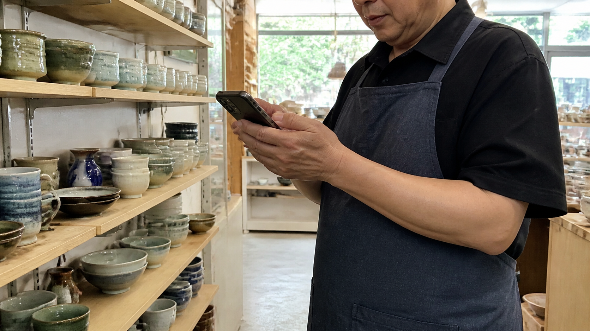

밤 9시 카톡 문의를 아침에 답하면 이미 늦습니다. 채팅 설정 세 칸
카톡 채널 1:1 채팅에는 가능 시간과 불가 안내, 자주 쓰는 답변이 있습니다. AI 상담은 챗봇을 쓰지 않는 채널에서만 켜집니다. 밤에 오는 문의가 새는 지점과 대행사에 맡길 때 확인할 세 가지입니다.
밤 9시에 카톡으로 "내일 저녁 예약 되나요"가 왔습니다. 사장님은 다음 날 아침 9시에 확인하고 정중하게 답합니다. 그런데 그 손님은 밤 10시에 다른 집에 자리를 잡았습니다.
카톡 채널에는 1:1 채팅의 가능 시간을 정하는 칸이 있습니다. 이 칸을 한 번도 열어 보지 않았다면, 지금 우리 채널이 몇 시부터 몇 시까지 대화를 받는지 모르는 채로 장사하고 있는 셈입니다.
이 글은 채팅 기능을 켜라는 이야기가 아닙니다. 이미 켜 둔 채널에서 문의가 새는 지점 세 칸과, 그걸 대행사에 맡길 때 확인할 것을 정리한 글입니다.
문의는 영업시간에 오지 않습니다#
카카오가 2026년 8월 공개한 연구가 있습니다. 한양대 ERICA 경제학부 연구진이 브랜드메시지를 보낸 사업자 2,510곳의 1년치를 분석했더니, 발송비 1원당 매출 효과가 약 5원으로 나왔습니다. 사업자 규모를 나누면 이야기가 달라집니다. 소규모 파트너는 1원당 11.1원, 발송 전보다 매출이 90.2% 늘었습니다.
이 연구는 채팅이 아니라 광고성 메시지의 효과입니다. 인과를 증명한 것도 아니고, 우리 가게에도 그 숫자가 나온다는 뜻은 아닙니다. 여기서 가져갈 문장은 하나입니다. 카톡으로 온 사람은 이미 우리 가게를 알고 연락한 사람이라는 것. 그 사람을 놓치는 건 유입을 놓치는 것과 다릅니다.

설정 세 칸#
관리자센터의 채팅 설정 화면에서 볼 곳은 세 군데입니다.
| 칸 | 무엇을 정하나 | 놓쳤을 때 생기는 일 |
|---|---|---|
| 채팅 가능 요일·시간 | 요일별로 시작과 종료 시각 | 가능 시간 밖 문의는 안내만 받고 끝납니다 |
| 채팅 불가능 안내 메시지 | 그 시간에 말을 건 손님에게 자동으로 나가는 문장 | 손님은 답이 없는 건지, 읽은 건지 모릅니다 |
| 자주 쓰는 답변 | 예약·주차·가격·영업시간 답변 | 같은 답을 하루에 열 번 손으로 칩니다 |
카카오 안내에 따르면 시작 시간보다 종료 시간을 빠르게 설정하면 다음 날 새벽 시간대까지 채팅이 가능합니다. 밤 9시부터 새벽 1시까지 받고 싶다면 21시 시작, 01시 종료로 넣는 식입니다. 시간은 한국 시간 기준입니다.
채팅 불가능 안내 메시지에는 다음 가능 시간을 꼭 넣으세요. "영업시간에 답변드립니다"로 끝나면 손님은 기다릴지 말지 판단하지 못합니다. "오전 10시에 답변드립니다. 급하시면 000-0000-0000으로 전화 주세요"가 다음 행동을 만듭니다.
자주 쓰는 답변은 PC 관리자센터에서 등록합니다. 예약 가능 시간, 주차 대수, 취소 기준, 단체 인원. 이 네 개만 넣어도 야간 문의의 절반은 사람 손을 거치지 않고 끝납니다.
한 가지 주의할 게 있습니다. 친구가 아닌 손님이 채팅방에 처음 들어오면 채팅 안내 메시지가 1회 자동으로 나갑니다. 이 문장에 할인이나 이벤트 같은 광고성 내용을 넣으면 과태료 대상이 될 수 있습니다. 안내는 안내로만 쓰세요.
AI 상담을 켜려면 챗봇을 꺼야 합니다#
여기서 대부분이 놓치는 게 하나 있습니다. 카카오에는 카나나 상담매니저라는 AI 응대 기능이 있습니다. 손님이 물으면 AI가 먼저 답하고, 필요하면 관리자를 부릅니다.
켜는 조건이 세 가지입니다. 비즈니스 인증을 받은 채널이어야 하고, 챗봇을 쓰지 않는 채널이어야 하고, 공개 상태여야 합니다. 챗봇을 이미 돌리고 있다면 이 기능을 켤 수 없습니다. 둘 중 하나를 골라야 합니다.
AI가 답하는 근거는 채널 홈, 메뉴, 소식에 등록된 정보입니다. 그래서 준비할 것은 시나리오가 아니라 채널에 적힌 내용입니다. 영업시간이 예전 그대로면 AI는 예전 시간을 자신 있게 말합니다. 켜기 전에 홈·메뉴·소식의 가격과 시간을 먼저 맞춰 두세요.
AI 답변은 미리보기로 월 300회까지 확인할 수 있습니다. 고객에게 나가기 전에 내 질문으로 먼저 물어보는 편이 안전합니다. 상담률은 최근 7일 기준으로 AI 답변, 관리자 연결, 관리자 호출 비율이 나옵니다. 이 숫자를 보면 AI가 어디서 막히는지 보입니다.
대행사에 맡긴다면 계정부터 확인하세요#
채널 운영을 맡기기 전에 세 가지를 정하세요.
첫째, 관리자 계정의 주인입니다. 채팅 메뉴에 들어가려면 관리자 추가인증이 필요하고, 이 인증은 카카오톡이나 문자로 옵니다. 인증 번호를 받는 번호가 누구 것인지 정해 두지 않으면 나중에 대화 기록을 열지 못합니다.
둘째, 담당자 지정과 상담 완료 처리입니다. 관리자가 여럿이면 채팅방마다 담당자를 지정할 수 있고, 끝난 상담은 완료로 옮길 수 있습니다. 이 정리 없이 문의가 100건 쌓이면 아무도 답하지 않은 건이 몇 건인지 알 수 없습니다.
셋째, 기록 보관 기간입니다. 1:1 대화 내용은 카카오톡 서버에 3년 보관되고, 그 뒤에는 확인이 어렵습니다. 클레임이 두 달 뒤에 오는 업종이라면 상담 내용을 따로 남기는 절차가 필요합니다.
예약 확정 뒤에 깨지는 지점은 예약 취소 세 관문 글에, 첫 답장 문장은 문의 답장 세 줄 글에 정리해 두었습니다.
이 글의 한계#
응답 속도가 중요한 정도는 업종마다 다릅니다. 당일 예약을 받는 음식점과 상담 후 계약하는 업종은 기다리는 시간의 값이 다릅니다. 카카오 기능과 조건은 공지로 바뀌므로, 설정 전에 관리자센터 안내를 한 번 더 확인하세요.
앞서 인용한 연구는 브랜드메시지 발송 사업자의 평균이고, 채팅 응대의 효과를 측정한 자료가 아닙니다. 우리 채널의 문의 건수와 전환은 카카오가 공개하지 않아, 결국 상담 일지를 직접 세는 방법밖에 없습니다.
확인한 자료#
- 카카오비즈니스 가이드 「채팅」: 채팅 설정·안내 메시지·자주 쓰는 답변·카나나 상담매니저 — https://kakaobusiness.gitbook.io/main/channel/run/chat (새 탭에서 열림)
- 브랜드메시지 발송비 1원당 매출 5원, 소규모 11.1원(한양대 ERICA 연구, 파트너 2,510곳), 한국경제 2026년 8월 25일 — https://www.hankyung.com/article/202608250777g (새 탭에서 열림)
- 카카오 그룹 비즈니스 임팩트 리포트 2025, 톡채널 사례 — https://www.kakaocorp.com/page/detail/10995 (새 탭에서 열림)
자주 묻는 질문#
채팅 가능 시간을 24시간으로 두면 안 되나요?#
가능합니다. 다만 새벽에 온 문의에 아침까지 답이 없으면 손님 입장에서는 24시간이 아닙니다. 24시간으로 열어 둘 거라면 불가 시간 안내 메시지와 자주 쓰는 답변을 먼저 채우고, 최소한 "언제 답이 오는지"는 알려 주세요.
챗봇과 AI 상담 중 무엇을 고르나요?#
정해진 질문이 반복되는 가게는 챗봇이 낫고, 질문이 매번 달라지는 가게는 AI 상담이 낫습니다. 둘을 동시에 켤 수는 없습니다. 카나나 상담매니저를 켜려면 챗봇을 쓰지 않는 채널이어야 한다는 조건이 있습니다.
AI가 틀린 가격을 말하면 책임은 누구에게 있나요?#
채널에 등록된 정보를 근거로 답하기 때문에, 결국 정보를 관리한 사업자 몫입니다. 켜기 전에 홈·메뉴·소식의 가격과 시간을 최신으로 맞추고, 미리보기로 자주 받는 질문을 직접 확인하세요.
대행사가 채팅까지 답해 줄 수 있나요?#
관리자로 추가하면 가능합니다. 다만 관리자 추가인증에 쓰는 전화번호와 이메일을 사업자 것으로 유지하고, 담당자 지정과 상담 완료 처리를 계약에 넣으세요. 그래야 나중에 대화 기록과 미답변 건을 직접 확인할 수 있습니다.
지금 우리 채널 설정이 어떻게 되어 있는지 궁금하면 채널 이름만 카카오톡 채널 (새 탭에서 열림)로 보내 주세요. 채팅 시간과 안내 문구부터 같이 보겠습니다.
KEEP READING
이어서 읽기
같은 흐름에서 이어지는 글입니다. 지금 매장에 해당하는 지점부터 읽으시면 됩니다.
예약은 확정된 뒤에 깨집니다 — 확인 문자, 리마인드, 취소 기준의 순서
예약이 깨지는 지점은 확정 직후, 전날 밤, 당일 아침 세 곳입니다. 네이버 예약 환불 기준과 예약금 설정의 확인된 규칙을 바탕으로, 예약금을 걸기 전에 먼저 할 일을 순서대로 정리했습니다.

문의는 오는데 예약은 안 됩니다 — 답장 첫 세 줄과 대행 범위
손님은 가게가 가장 바쁜 시간에 문의하고, 사장님은 마감 뒤에 답합니다. 그 사이 예약은 다른 가게로 갑니다. 카카오톡 채널에서 무료로 맞출 다섯 단계와 대행 계약에서 확인할 세 가지를 정리했습니다.